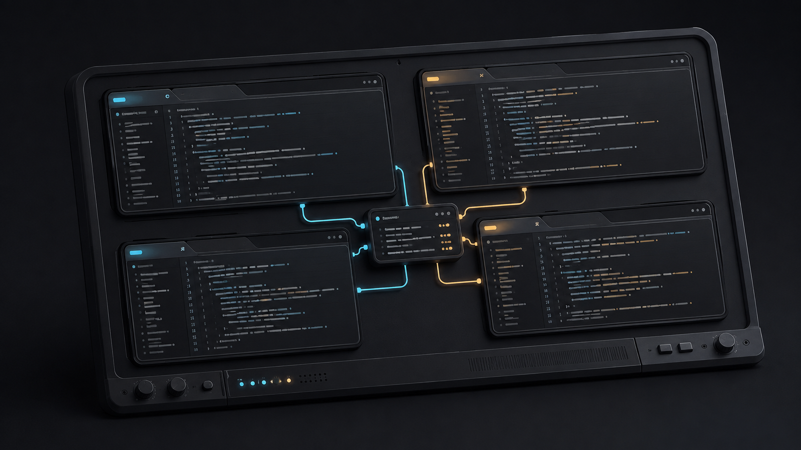

Lead tab
The first agent tab. Holds the brief, creates the feature worktree, dispatches jobs, and decides what gets repaired and accepted.
Native agents · optional cmux coordination
Use /team in Claude Code or select @team in Codex.
Your session leads, delegates useful independent work, and gets a fresh review.
Add cmux when you want a coordinated workspace with visible agent tabs.
Created and maintained by Andrew Guzman. Source on GitHub.

Start here
One shared skill works in Claude Code, Codex desktop, and Codex CLI. Start with your signed-in native app and open the repository you want to work on.
The installer adds skill links. Your native model, trust, and permission settings stay in force.
Prefer to work without the skill? Use the direct-session guide.
git clone https://github.com/andrewnova/agent-team-harness.git
cd agent-team-harness
./scripts/install-team-skill.shKeep this clone available: both apps read the same skill source. If you already have the clone, update it and run the installer there. Existing different skills are preserved. Start a new native session if team is not visible.
| App | Native work | cmux team |
|---|---|---|
| Claude Code | /team <task> |
/team cmux |
| Codex desktop | Select @team, then enter your task |
Select @team, then type cmux |
| Codex CLI | $team <task> |
$team cmux |
team cmux opens a team ready for work. Append a task to hand it to the ready lead, such as /team cmux Build the settings page. See cmux requirements and startup.
Native work stays in your current session, with useful child agents and a fresh read-only review. Simultaneous writers use separate checkouts. Coordinated cmux teams remain experimental. Trial findings.
The lead and every worker or reviewer are native tabs in a single cmux project. Every agent has a tab you can open.
Each job that writes code works in its own separate checkout. The lead assembles the reported commits into one feature worktree.
Whichever model leads, fresh sessions of the opposite model review the assembled feature before it can be called ready.
Experimental teams
The launcher creates one cmux project in the sidebar and opens the lead as the first agent tab. When you give the lead a task, it creates a worker or reviewer tab for each job it dispatches. Each tab is a real native Codex or Claude Code session with its own login, workspace-trust, and approval prompts, and you can type into any of them. Inside a tab, the session can fan out into its own child agents.
The first agent tab. Holds the brief, creates the feature worktree, dispatches jobs, and decides what gets repaired and accepted.
One per implementation job. Each has a private, writable checkout and a scoped prompt, can split independent pieces across its own child agents, and reports its commit back to the lead.
Fresh, read-only sessions of the opposite model. They see the brief, the exact candidate, and the full integrated diff, fan out child agents across independent risk areas, and return one verdict with findings.
Who does what
Either model can lead. Whichever one does, review comes from fresh sessions of the opposite model, started as separate read-only jobs even when that model also implemented part of the feature.
| Assignment | Runtime | Model |
|---|---|---|
| Lead | Codex by default, or Claude Code with --leader claude |
Astra or Fable |
| Backend implementation and repairs | Codex, private writable checkout | Astra |
| Frontend implementation and repairs | Claude Code, private writable checkout | Fable |
| Review when Astra leads | Fresh Claude Code sessions, read-only | Fable |
| Review when Fable leads | Fresh Codex sessions, read-only | Astra |
Feature workflow
Reviewers always see one complete, committed candidate, never a moving target. Every step below is something the lead does deliberately from the command line. There is no automatic scheduler.
You give the lead a task. It writes the feature brief with acceptance criteria and creates one feature worktree on its own branch.
The lead creates worker jobs, each with a private checkout and a scoped prompt, and launches the ones whose dependencies are finished, up to the active-job cap.
Workers report their commits. The lead imports each one into the feature worktree, with the allowed paths stated up front. Importing a commit does not approve it.
Once the complete feature is committed, the lead takes a snapshot. That exact candidate is what reviewers and checks are measured against.
Fresh reviewer sessions from the opposite model receive the brief, the candidate, and the full integrated diff. Each reviewer can fan out child agents across independent risk areas and returns one verdict. Declared checks run on an isolated checkout of the same candidate at the same time. Every finding points at source.
The lead collects the whole review round, batches the fixes, commits, and snapshots again. Every required reviewer and check runs again on the new candidate. Earlier approvals do not carry over.
The feature is eligible once every required current reviewer verdict and check passes and all required findings are resolved with evidence. Eligible means ready for integration. It does not merge, publish, or deploy anything by itself.
How the tabs talk
Every message between jobs is appended to the harness's existing local mailbox, addressed to a specific job and attempt. The record survives a closed tab, and you can read any job's inbox yourself.
Codex and Claude Code each get the same small local MCP server, bound to their own job: report ready or a result, send a message, read the inbox, reply. Your global Codex and Claude settings are left alone.
After a send, cmux delivers a short wake to the recipient's tab asking it to read its inbox. The mailbox holds the real message. Text appearing in a terminal is not a reply, and a job is ready only when it reports ready itself.
Experimental cmux teams
After installing the skill, use /team cmux in Claude Code, select @team and type cmux in Codex desktop, or use $team cmux in Codex CLI.
The skill starts or reuses the current project's team. You can append a task for the lead, or leave it ready for your next instruction.
Startup must run in a cmux terminal. From a desktop session, the skill uses available native computer control to open one; otherwise it gives you the command to run there. Native login and trust prompts may still need your attention.
cd /absolute/path/to/agent-team-harness
node scripts/start-team.js --project /absolute/path/to/your/repoUse your harness clone and the absolute path to the Git repository you want the team to work on. Manual startup is also available without installing the skill.
Prefer a Claude Code lead with Fable? Add --leader claude to the last
command. Reviewers then come from fresh Astra sessions.
The native teams documentation covers job and feature definitions, assembly, checks, review results, and how to stop or diagnose a job.